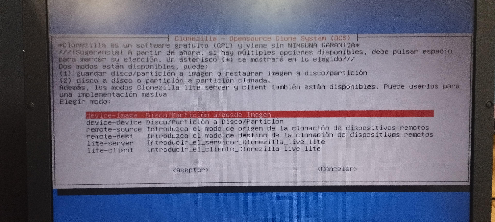

Clonezilla Samba/SSH
Clonezilla es un software libre de recuperación de una imagen creada de un sistema operativo,
tiene diversas funcionalidades como crear una imagen del sistema o eliminarla o por ejemplo eliminar una partición.
Clonezilla está diseñado por Steven Shaiu y desarrollado por el NCHC Labs en Taiwán.
Creacion del Pendrive de Arranque
Para crear nuestro pendrive de arranque utilizaremos la herramienta de creacion de discos de Ubuntu,
tambien tendremos que tener descargado el archivo ISO de Clonezilla.
Entonces seleccionamos nuestro Pendrive y el Archivo ISO de Clonezilla para iniciar el proceso.
Esperamos a que se termine el proceso

Le damos a Instalar

Esperamos a que se instale

Ya estaria instalado Clonezilla en el pendrive
Creación de la Imagen de Disco en el Servidor con Samba
En este apartado vamos a crear una imagen de disco del equipo y la guardaremos en el equipo que hara de Servidor
con la funcionalidad de Samba
Pues como en el tutorial anterior seleccionaremos la primera opción para arrancar Clonezilla porque no da problemas y es la
opción estandar

Seleccionamos Español como idioma del teclado
En este menu selecionaremos la opcion device_image para realizar una imagen de disco

En este menu vamos a seleccionar la opcion de samba_server para enviar la imagen de disco al server

A la hora de poner la IP es preferible ponerla en estatico por que asi no da problemas
Aqui tendremos que poner la IP de nuestro equipo
Tambien pondremos la dirección MAC
En esta sección vamos a poner la Puerta de Enlace de nuestra red
En la resolución de nombre pondre el DNS de Google porque es uno de los mejores y porque es el que mas se utiliza
Aqui pondremos la dirección IP del servidor al que enviaremos la imagen del disco

En este apartado pondremos la ruta donde queremos que se guarde la copia

Y ponemos las contraseña para acceder a el
Aqui simplemente le daremos a Principiante para que se automaticen algunos procesos y sea mas rapida la creación de la imagen

Ahora seleccionamos en este menu el modo save_disk para guardar el disco local como imagenes

Le ponemos un nombre a nuestra imagen de disco
Seleccionamos el disco del cual vamos hacer la copia

Aqui simplemente usaremos la zip, porque es la que mas se usa y no da problemas de compatilidad
Omitiremos el chequeo del sistema de archivos porque asi es mas rapido, pero siempre recomiendo hacer este chequeo para evitar errores inoportunos

Tambien nos saltaremos la comprobacion despues de que se guarde para saber si es restaurable, pero recomiendo siempre hacerla para evitar errores

Y esperamos a que se realice
Y ya estaria hecha nuestra copia en el servidor
Restauración de una imagen de disco con SSH desde un servidor
En esta parte del tutorial vamos a aprender como usar imagen de disco alojada en un servidor para poder restaurar nuestro equipo mediante la funcionalidad SSH

Pues como en el tutorial anterior seleccionaremos la primera opción para arrancar Clonezilla porque no da problemas y es la opción estandar

En este menu selecionaremos la opcion device_image para usar una imagen de disco para restaurar el equipo
Y seleccionaremos la funcionalidad SSH para recuperar nuestra imagen de disco

A la hora de poner la IP es preferible ponerla en estatico por que asi no da problemas

Aqui tendremos que poner la IP de nuestro equipo

Tambien pondremos la dirección MAC

En esta sección vamos a poner la Puerta de Enlace de nuestra red

En la resolución de nombre pondre el DNS de Google porque es uno de los mejores y porque es el que mas se utiliza
Aqui pondremos la dirección IP del servidor al que accederemos para recuperar la imagen de disco
Ahora pondremos el nombre del usuario que tiene los permisos para poder acceder al servidor
En esta sección ponemos la direccion donde se encuentra alojada la imagen de disco
Aceptamos de que queremos entrar al servidor y nos pedira la contraseña del usuarioremoto
Ponemos la contraseña

Ahora seleccionamos la acción que vamos a querer hacer, nosotros como vamos a restaurar el equipo vamos a seleccionar restore_disk
Seleccionamos nuestra imagen de disco
Ahora seleccionamos el disco donde vamos a instalar la imagen

Le diremos que si vamos a usar la misma tabla de particiones para que no haya fallos
Y nos volvemos a saltar las comprobaciones porque es mas rapido de esta manera, pero recomiendo hacerla por si esta dañada
Y ya aqui nos va a pedir lo que va hacer el equipo cuando termine de restaurarse, en mi caso lo apago
Nos avisa de que va a borrar todo el contenido del disco, le decimos que si

Esperamos a que se restaure

El proceso ya ha terminado, ahora comprobaremos si se ha restaurado correctamente

La restauración ha funcionado y ha quedado un equipo totalmente funcional